Anime Scenes
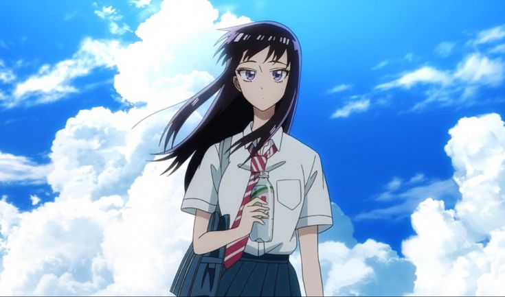
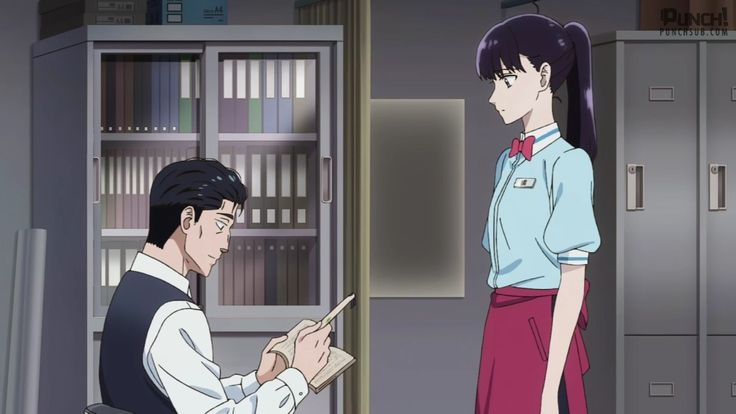
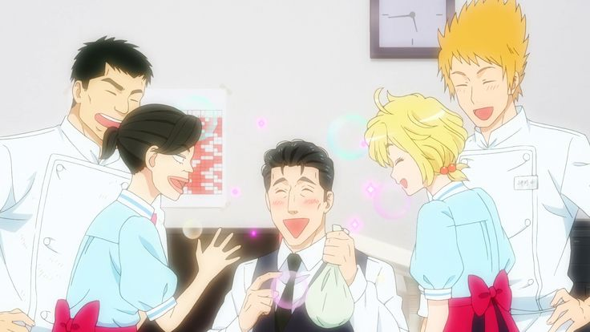
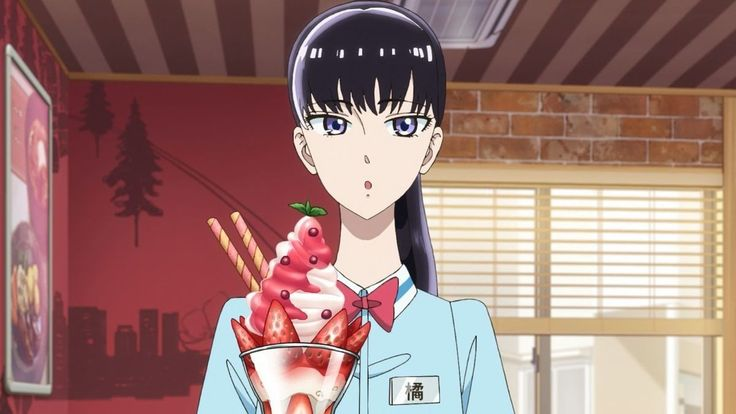
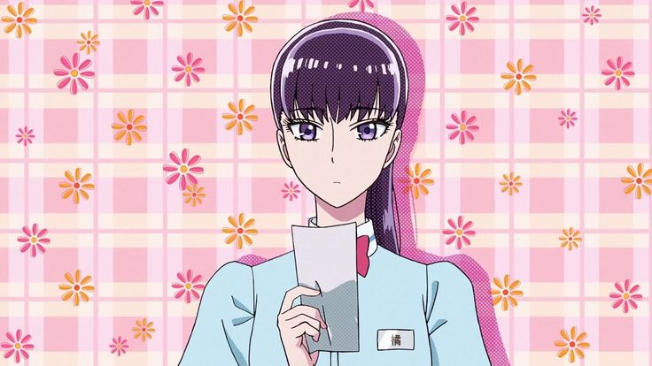
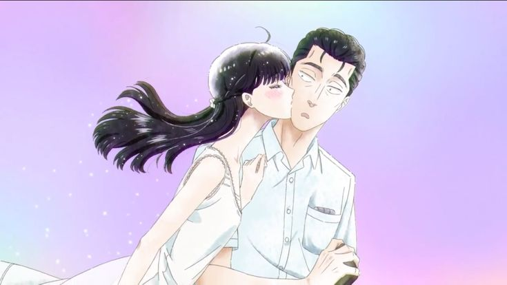
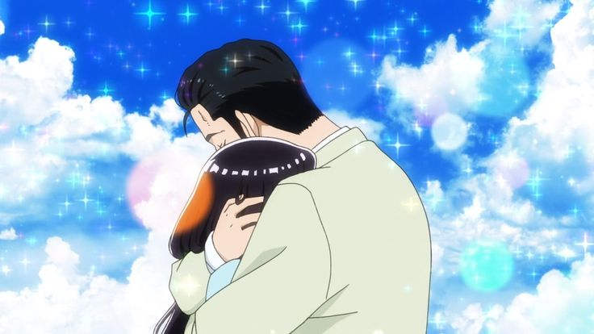
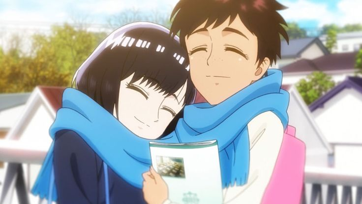
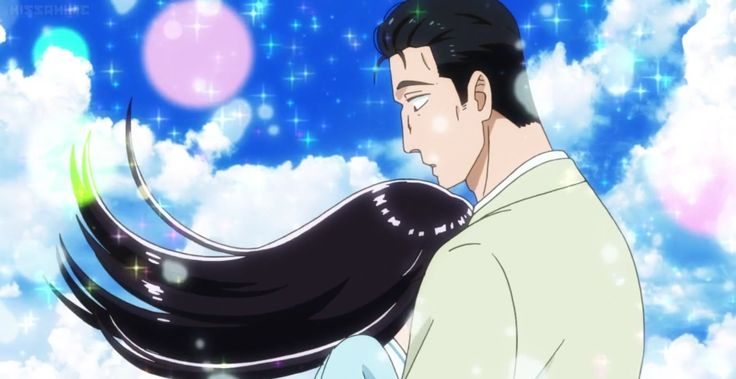
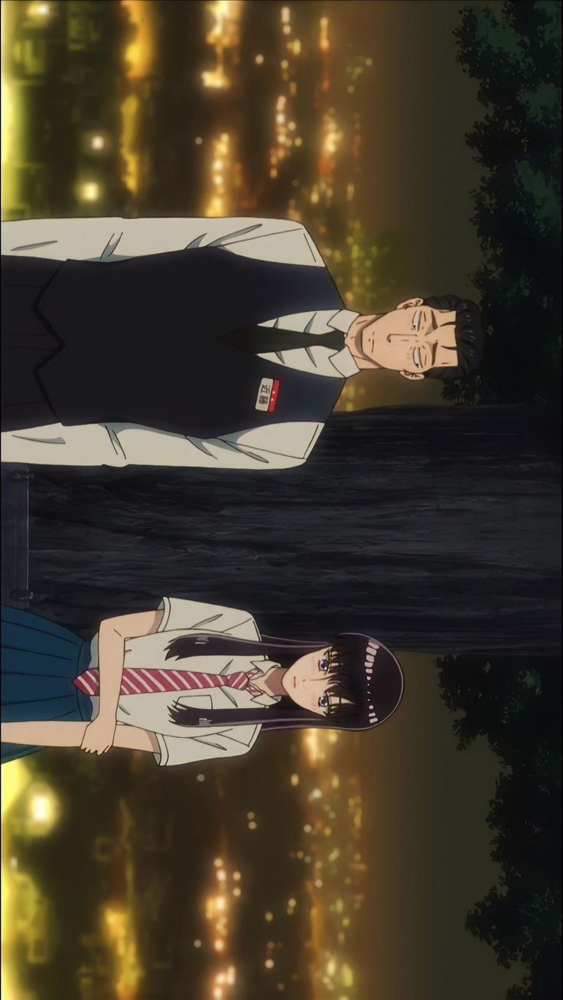
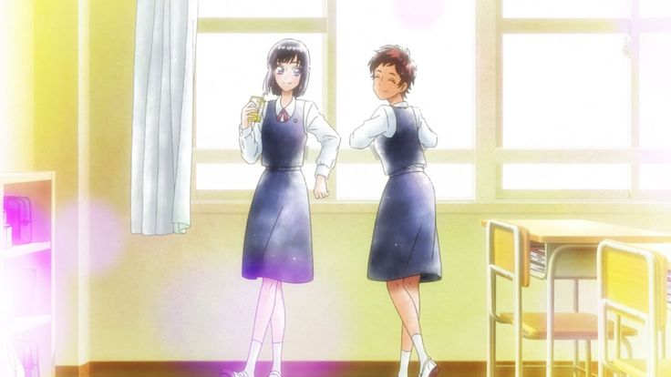
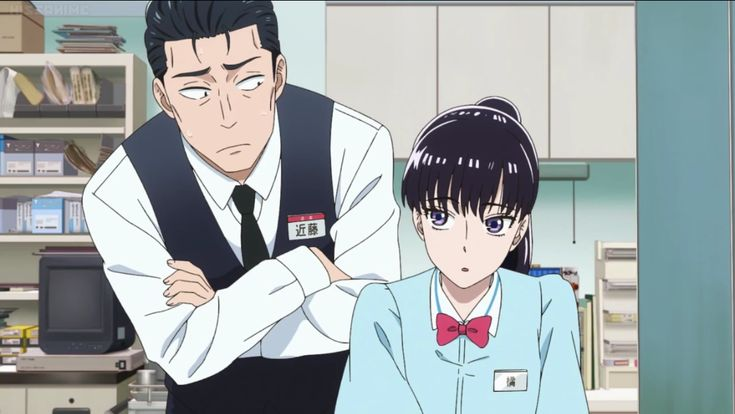
“The rain will eventually stop, and a new morning will begin.”
Anime Studio: Wit Studio
Director: Ayumu Watanabe
Producer: Fuji TV, Aniplex
Distributor: Amazon Prime Video
Rating: ★ 7.5 / 10
Source: Manga
Release Date: Jan 11, 2018
Episodes: 12 Episodes
Music by: Ryō Yoshimata
Status: Finished
Country: Japan
Language: Japanese
Genre: Romance, Drama
Awards: Praised for animation style